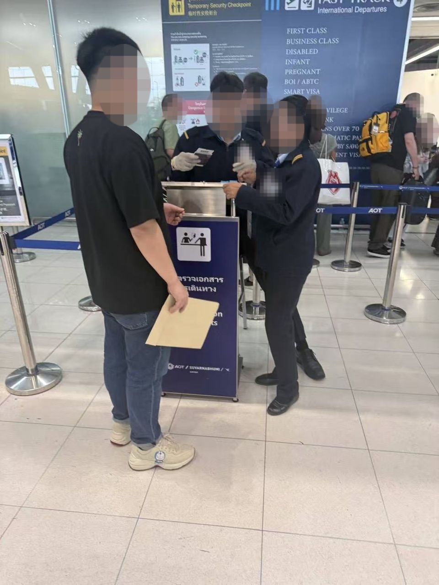
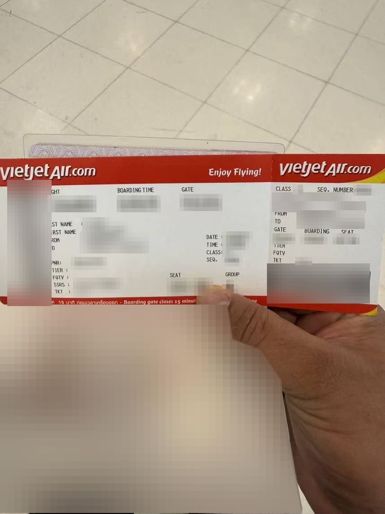

01
Meet at an agreed spot
We agree on a meeting point and time in advance, so you don't have to search for us at the airport.
AIRPORT SEND-OFF
Escorted all the way, depart with peace of mind
Flying out of Bangkok for the first time? Travelling with your parents, or with several big suitcases? Suvarnabhumi and Don Mueang are large, sprawling airports, and finding your check-in island and queuing for security can easily get stressful. We send someone to walk you through every step before departure.
We agree on a meeting point and time in advance, so you don't have to search for us at the airport.
We take you to the right check-in island and help with check-in and checked baggage.
We queue with you through security, using Fast Track if you are eligible.
We guide you all the way to the gate area, so all you need to do is relax and fly.
Available at both Suvarnabhumi and Don Mueang airports. Booking ahead makes everything smoother.
Someone walks them through check-in and security, so the family can relax.
With children to watch and several bags to handle, an extra pair of hands keeps departure calm.
Not familiar with airport procedures or signs? Just follow along.
Real send-off photos, with faces and boarding pass details blurred.



Please tell us your departure airport, flight number and date in advance so we can confirm arrangements. The escort and Fast Track do not replace exit immigration checks; departure clearance is decided by immigration officers.
Departure airport, meeting point and other details are confirmed with you one-to-one in advance.
Yes. We can arrange a send-off escort at both Suvarnabhumi (BKK) and Don Mueang (DMK). Booking ahead makes everything smoother.
When you book, we agree on a meeting point and time inside the airport, so you can meet us directly without searching.
Fast Track requires meeting certain conditions. We check this in advance based on your flight and situation; if you are not eligible, we accompany you through the regular security queue.
No. The escort and Fast Track do not replace exit immigration checks; departure clearance is decided by immigration officers.
No. Just tell us your departure airport, date and number of travellers. Please do not enter passport numbers or bank details in the form, and do not upload ID documents.
Consultation via WhatsApp, LINE & WeChat · Book ahead for a smoother departure.
The WhatsApp link pre-fills a draft. Nothing is sent automatically.
Open Telegram · @Taiguo911 Telegram channel: 方诺签证 Messenger LINE: north137946Office · Room 1916, 19th Floor, Pier111 Building, 111 Ratchadamri Road, Bangkok · The office matches the registered address. Please contact us before visiting.
Fill in the inquiry formInquiry form (optional)
We build a draft; you send it yourself.
Step 1 of 3
This form only organises your request. It does not assess visa eligibility.
Telegram does not pre-fill text: copy it first, then paste and send.
Your draft is created only on this page and is cleared when you refresh. Opening the pre-filled link hands the draft to WhatsApp, and you still send it yourself; for Telegram, copy and paste. A first consultation only needs your rough location and needs. Please do not enter passport numbers or bank details, or upload ID documents. The hosting platform and messaging apps apply their own privacy policies.